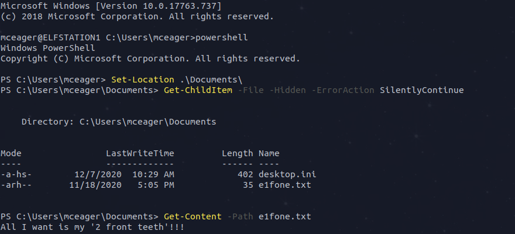
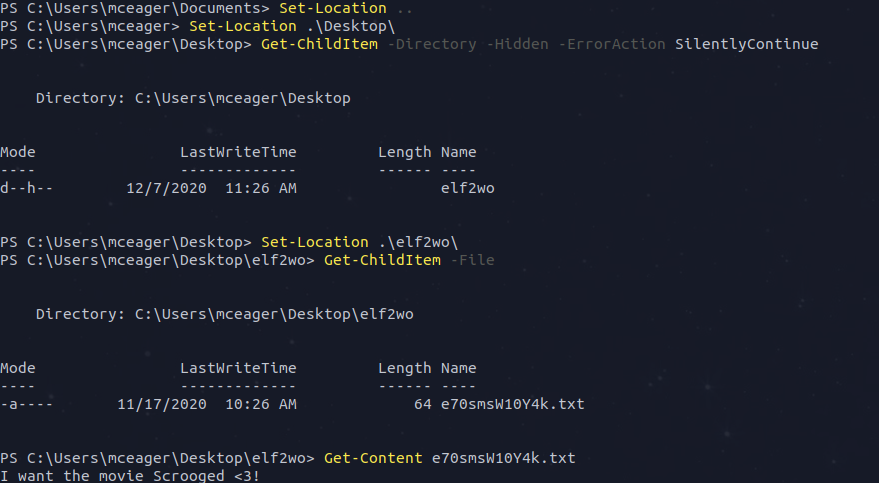
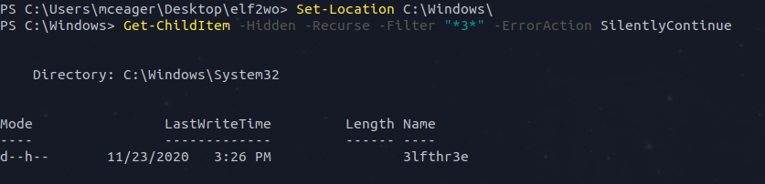
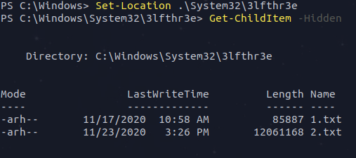
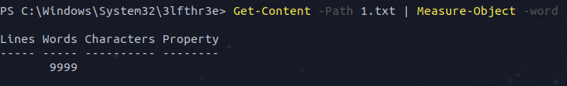
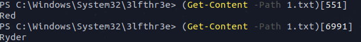
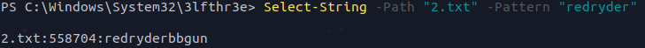

bolo@write-up:~$ cat Task.txt
Someone is mischievous at The Best Festival Company. The contents within the stockings have been removed. A clue was left in one of the stockings that hints that the contents have been hidden within Elfstation1. McEager moves quickly and attempts to RDP into the machine. Yikes! He is unable to log in. Note: All of the ips shown in this write-up will probably not be the same for you.
bolo@write-up:~$ cat settingUp.txt
We first need to login to the machine using ssh and get our powershell running.
bolo@write-up:~$ cat 1.txt
Search for the first hidden elf file within the Documents folder. Read the contents of this file. What does Elf 1 want?Once that we are log on, we need to go to the Documents folder and look for the hidden files within it.
Answer: 2 front teeth
bolo@write-up:~$ cat 2.txt
Search on the desktop for a hidden folder that contains the file for Elf 2. Read the contents of this file. What is the name of that movie that Elf 2 wants?Now, we need to go to the desktop of the mceager user, to do so, we go back to the previous folder and move to the desktop. After what, we can look for the hidden files within this directory. Once we found the interesting folder (elf2wo) we just browse into it and read the file.
Answer: Scrooged
bolo@write-up:~$ cat 3.txt
Search the Windows directory for a hidden folder that contains files for Elf 3. What is the name of the hidden folder? (This command will take a while)This is where we start to think by ourselves, here we will need to create a filter to find the elf's folder, I'll use "*3*" which means : anything-3-anything, for example 3de.png is valid, but d5e.png is not.
Answer: 3lfthr3e
bolo@write-up:~$ cat 4.txt
How many words does the first file contain?A pretty easy one there, we just browse to the found folder, find the hidden files and use the command that was given to us in the introduction of this challenge to get the number of words.
 Answer: 9999
bolo@write-up:~$ cat 5.txt
What 2 words are at index 551 and 6991 in the first file?Once more, we just have to use the command given in the intro and apply it to the problem.
Answer: Red Ryder
bolo@write-up:~$ cat 6.txt
This is only half the answer. Search in the 2nd file for the phrase from the previous question to get the full answer. What does Elf 3 want? (use spaces when submitting the answer)Here we have the big boss, the last and final question of this challenge !!! Luckily for us, it was a pretty easy donjon and our insane lvl 24 Knight character will just destroy this last enemy with a simple Select-String attack.
Answer: red ryder bb gun